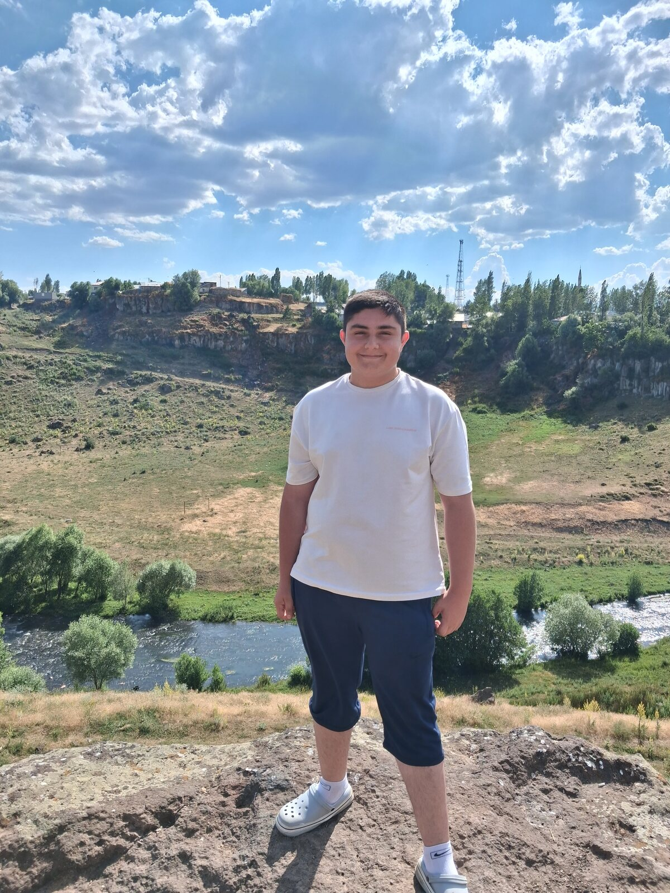

01 / OYUN
Video oyunları
Yeni dünyalara dalmak, farklı maceralar yaşamak ve oyunların keyfini çıkarmak.
— MERHABA, BEN —
Hayatı merakla keşfeden, oyunlara dalan ve hayvan dostlarıyla vakit geçirmeyi seven bir öğrenciyim.

KENDİMİ KISACA ANLATAYIM
Ben Eren Şentürk. 11. sınıf öğrencisiyim ve 11/B AMP sınıfında okuyorum. Boş zamanlarımda video oyunları oynamayı, gezmeyi ve hayvanlarla ilgilenmeyi seviyorum. Yeni yerler ve yeni şeyler keşfetmek bana ilham veriyor.
Bu sayfa, kendimi ve sevdiğim şeyleri paylaşmak için hazırladığım küçük bir dijital köşe.
BOŞ ZAMANLARIMDAN
Günlerimi güzelleştiren, bana enerji ve ilham veren küçük büyük uğraşlar.
Yeni dünyalara dalmak, farklı maceralar yaşamak ve oyunların keyfini çıkarmak.
Yeni yerler görmek, güzel manzaralara denk gelmek ve anı biriktirmek.
Hayvan dostlarıyla vakit geçirmek ve onlara özenle bakmak.
Güzel manzaraları ve gün içindeki küçük anları kadrajıma almak.
Moduma eşlik eden şarkılarla dinlenmek ve yeni melodiler keşfetmek.
Açık havada yürüyüş yapmak, çevreyi gözlemlemek ve temiz hava almak.
HER GELİŞTE BAŞKA BİR MİTOLOJİK KONUK
Sayfayı her açışında mitolojik bir varlık ve onun kısa hikâyesi seni karşılasın.
Güzel bir yolculuk,
merak ettiğin yerde başlar.
BİR MERHABA BIRAK
Sosyal medyada buluşalım ya da bana ulaş.
“Hayatta en hakiki mürşit ilimdir.”— MUSTAFA KEMAL ATATÜRKBu söz, Atatürk’ün 1924’te söylediği veciz sözün yaygın kullanılan kısa biçimidir.